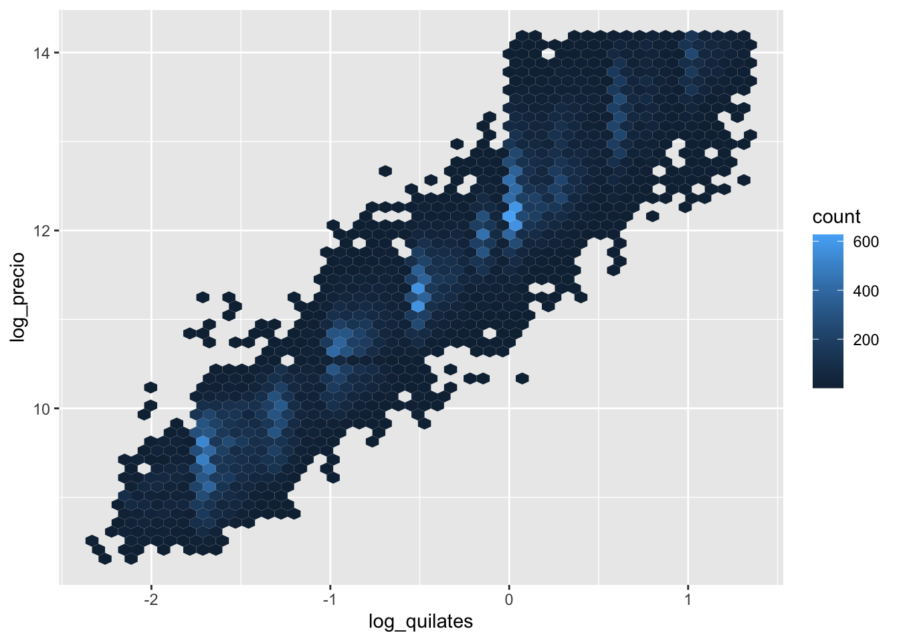
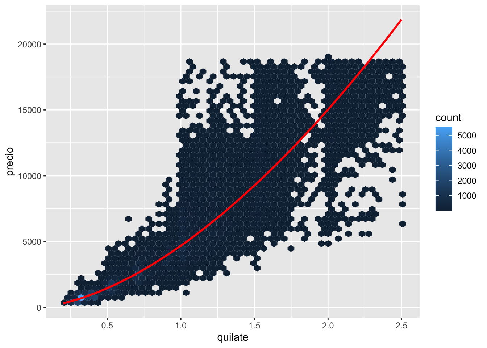
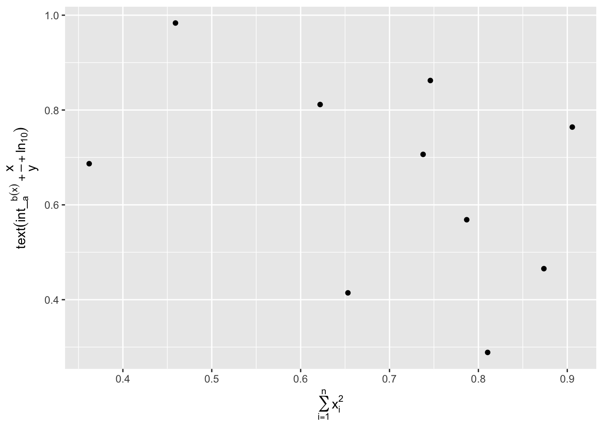
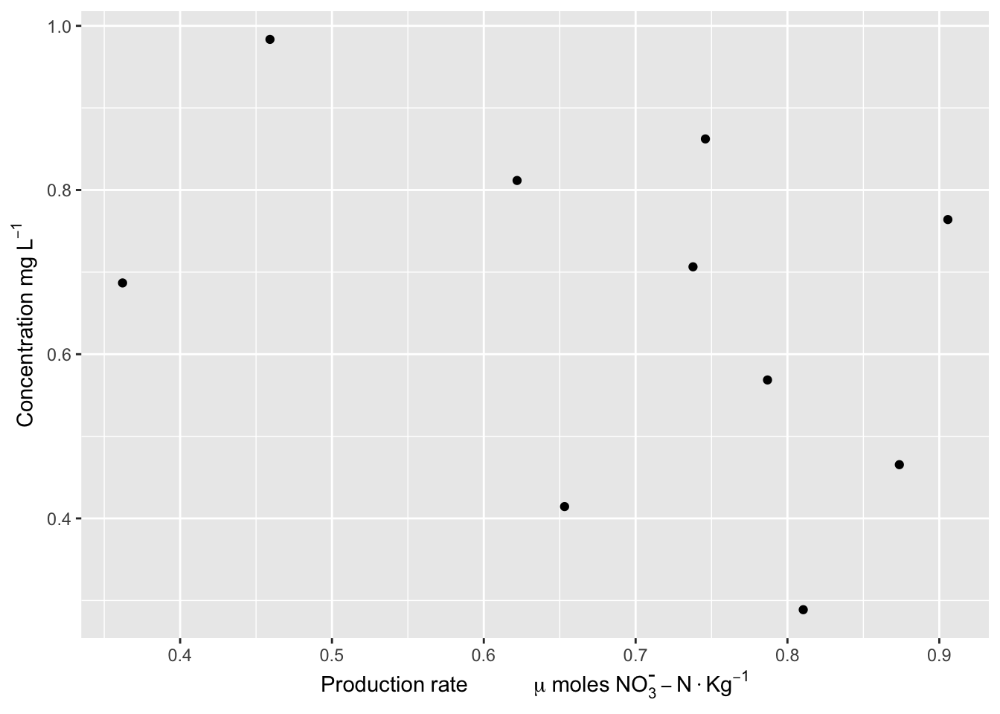
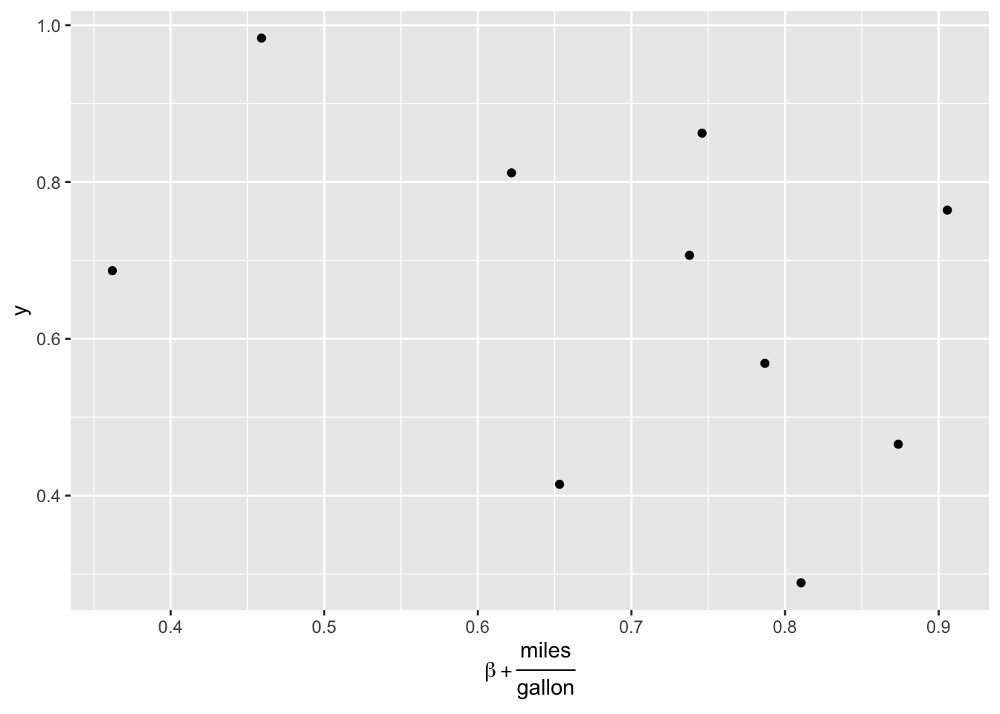

Construcciones_Modelos
Raymond L. Tremblay
5/3/2021
library(tidyverse)## ── Attaching packages ─────────────────────────────────────── tidyverse 1.3.1 ──## ✓ ggplot2 3.3.3 ✓ purrr 0.3.4
## ✓ tibble 3.1.1 ✓ dplyr 1.0.5
## ✓ tidyr 1.1.3 ✓ stringr 1.4.0
## ✓ readr 1.4.0 ✓ forcats 0.5.1## ── Conflicts ────────────────────────────────────────── tidyverse_conflicts() ──
## x dplyr::filter() masks stats::filter()
## x dplyr::lag() masks stats::lag()library(modelr)
library(lubridate)##
## Attaching package: 'lubridate'## The following objects are masked from 'package:base':
##
## date, intersect, setdiff, unionlibrary(datos)
options(na.action = na.warn)BoxPlots
Como se interpreta los box plots?
ggplot(diamantes, aes(corte, precio)) + geom_boxplot()
ggplot(diamantes, aes(color, precio)) + geom_boxplot()
ggplot(diamantes, aes(claridad, precio)) + geom_boxplot()
Dot PLots
En este caso se usa hex, cada hex es de color diferente por la cantidad de datos en cada uno de los puntos
ggplot(diamantes, aes(quilate, precio)) +
geom_hex(bins = 50)
Foco en los diamantes más pequeños que 2.5 quilates (99.7% de los datos). Haz una transformación logarítmica de las variables quilates y precio
diamantes2 <- diamantes %>%
filter(quilate <= 2.5) %>%
mutate(log_precio = log2(precio), log_quilates = log2(quilate))ggplot(diamantes2, aes(log_quilates, log_precio)) +
geom_hex(bins = 50)
Construir un modelo lineal de relación entre quilate y precio
mod_diamantes <- lm(log_precio ~ log_quilates, data = diamantes2)cuadricula <- diamantes2 %>%
data_grid(quilate = seq_range(quilate, 20)) %>%
mutate(log_quilates = log2(quilate)) %>%
add_predictions(mod_diamantes, "log_precio") %>%
mutate(precio = 2 ^ log_precio)Visualizar el modelo
ggplot(diamantes2, aes(quilate, precio)) +
geom_hex(bins = 50) +
geom_line(data = cuadricula, colour = "red", size = 1)
Add residuals
diamantes2 <- diamantes2 %>%
add_residuals(mod_diamantes, "lresid")
ggplot(diamantes2, aes(log_quilates, lresid)) +
geom_hex(bins = 50)
Como añadir ecuaciones en los ejes
Usar el siguiente website para LATEX FORMULA
df <- tibble(
x = runif(10),
y = runif(10)
)
ggplot(df, aes(x, y)) +
geom_point() +
labs(
x = quote(sum(x[i]^2, i == 1, n)),
y = quote(alpha + beta + frac(delta, theta))
)
?plotmath
ggplot(df, aes(x, y)) +
geom_point() +
labs(
x = quote(sum(x[i]^2, i == 1, n)),
y = quote(text(int_[a]^b (x)+ frac(x,y) + ln[10]))
)
ggplot(df, aes(x, y)) +
geom_point() +
labs(x=expression(Production~rate~~~~~~~~~~~~mu~moles~NO[3]^{textstyle("-")}-N %.% Kg^{-1}),
y=expression(Concentration~mg~L^{-1}))
ggplot(df, aes(x, y)) +
geom_point() +
labs(x=expression(Production~rate~~~~~~~~~~~~mu~moles~NO[3]^{textstyle("-")}-N %.% Kg^{-1}),
y=expression(Concentration~mg~L^{-1}))ggplot(df, aes(x, y)) +
geom_point() +
xlab(expression(beta +frac(miles, gallon)))
library(latex2exp)x <- seq(0, 4, length.out=100)
alpha <- 1:5
data <- map_df(alpha, ~ tibble(v=.*x^., x=x, alpha=.))
p <- ggplot(data, aes(x=x, y=v, color=as.factor(alpha))) +
geom_line() +
ylab(TeX(r'($\alpha x^\alpha$, where $\alpha \in 1\ldots 5$)')) +
xlab(TeX(r'($\sum_{n=i}^n=x_i+...x_n$)'))+
ggtitle(TeX(r'(Using $\LaTeX$ for plotting in ggplot2. I $\heartsuit$ ggplot!)')) +
coord_cartesian(ylim=c(-1, 10)) +
guides(color=guide_legend(title=NULL)) +
scale_color_discrete(labels=lapply(sprintf(r'($\alpha = %d$)', alpha), TeX))
p 
Use the following website to create a Latex equation
https://www.latex4technics.com
Para los nombres de los diferentes simbolos a utilizar con TeX
https://www.tutorialspoint.com/tex_commands/omega1.htm
q <- ggplot(data, aes(x=x, y=v, color=as.factor(alpha))) +
geom_line() +
ylab(TeX(r'($\alpha x^\alpha$, where $\alpha \in 1\ldots 5$)')) +
xlab(TeX(r'($\int_{a}^{b} f(x)dx = F(b) - F(a)$)'))+
ggtitle(TeX(r'(Using $\LaTeX$ for plotting in ggplot2. I $\heartsuit$ ggplot!)')) +
coord_cartesian(ylim=c(-1, 10)) +
guides(color=guide_legend(title=NULL)) +
scale_color_discrete(labels=lapply(sprintf(r'($\alpha = %d$)', alpha), TeX))
q^2=_in(x_{i}+)2/(n-1)
r <- ggplot(data, aes(x=x, y=v, color=as.factor(alpha))) +
geom_line() +
ylab(TeX(r'($\sigma^{2}= \Sigma(x_{i} - \overline{x} / (n-1) + \Omega$)')) +
xlab(TeX(r'($\int_{a}^{b} f(x)dx = F(b) - F(a)$)'))+
ggtitle(TeX(r'(Using $\LaTeX$ for plotting in ggplot2. I $\heartsuit$ $\clubsuit$ $\arcsin(x)$ ggplot!)')) +
coord_cartesian(ylim=c(-1, 10)) +
guides(color=guide_legend(title=NULL)) +
scale_color_discrete(labels=lapply(sprintf(r'($\alpha = %d$)', alpha), TeX))
r